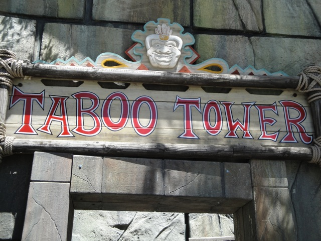

| |
Taboo Tower Review
We're on the Taboo Tower, home to three different slides. The first slide we'll talk about is Secret Passage. Secret Passage (The twisted enclosed slide) is a fun slide. You gain a lot of speed going through it and the twist at the end feels something like a waterslide version of Maverick. The second slide we'll be talking about is Daredevils Plunge. Daredevils Plunge (The Drop Slide) is also a lot of fun. If you're a dumbass like Cody, you can launch yourself into it, giving yourself quite some extra speed. However, Don't use Daredevils Plunge as an excuse for not going down Bonzai Pipelines. And finally, there's Escape Chute. Escape Chute (The slide with the humps) is also a really fun slide. You do get some waterslide airtime going down. But beware, Escape Chute will scratch your back.
7/10
Location: Six Flags Hurricane Harbor
Opened: 1995
Built by: White Water Slides
Last Ridden: June 18, 2022
I have ridden this exact same ride at the following waterparks.
Soak City
Taboo Tower Photos





Home
|